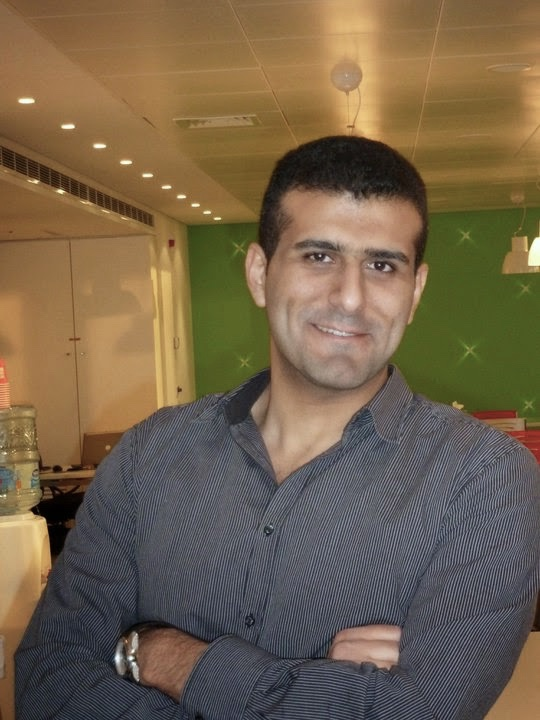

Ahmad Atwi
Ahmad Atwi is a Software Developer at Murex Systems, that he joined in 2009. Overall he has more than ten years of experience. Currently, he is a member of an agile team distributed between Paris and Beirut. He is an active member of the agile community at Murex and the animator of the CodingDojo sessions and meetups at the Beirut office.
Outside working hours, he writes blogs, reads books & articles and writes code for fun!
On a personal level, he is squash player and a licensed scuba diver.
Website: http://ahmadatwi.me/
Twitter: @ahmadatwi